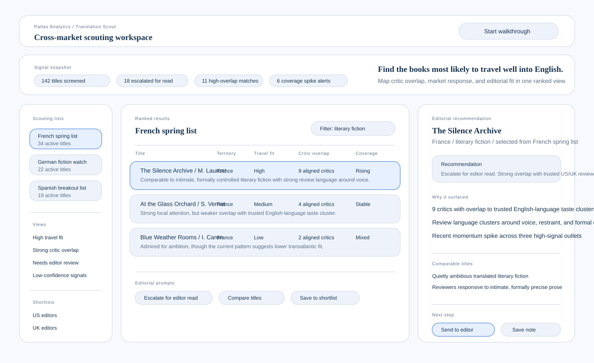

Rank titles by travel fit, critic overlap, and evidence quality so editorial attention goes where the signals are strongest.
Use case: publishing intelligence
Turn scattered scouting signals into a live conviction pipeline.
Translation Scout helps scouts, rights teams, and editors move from noisy foreign-market coverage to a ranked pipeline of titles worth deeper attention. It connects critical response, rights state, comparable titles, and editorial fit so teams can decide which books deserve real effort and why.
Outcomes
Built for the messy middle between first signal and real rights effort.
Translation Scout is not a rights marketplace and not just a recommendation layer. It is a working pipeline for deciding whether a foreign title deserves scarce reading, sample, rights, submission, and pursuit effort.
Show why a title belongs with particular editors, imprints, or publishing lanes instead of relying on vague enthusiasm.
Track translation difficulty, sample weakness, rights friction, unclear audience, and common reasons a title may stall or fail.
Capture objections, pass reasons, and outcome patterns so the system supports better rights judgment over time.
What It Does
It turns scouting into a pipeline the team can actually work.
Translation Scout helps teams ingest foreign title context, connect it to critic and market signals, map likely English-language fit, and turn that evidence into a next action inside a live scouting workflow.

How the workflow behaves
The main workspace turns coverage, overlap, and market signals into a ranked list of foreign titles worth attention now.
The right panel explains why a title surfaced: critic overlap, comparable titles, rights state, sample quality, blockers, and the recommended next step.
Titles can move from watch to sample to rights check to submission, with objections and pass reasons captured along the way.
What changes after adoption
Request Demo
See how a scouting pipeline becomes easier to rank, explain, and advance.
Show us a territory, scouting list, or editorial question and we’ll reply with the right demo or proof-of-concept view for Translation Scout.
Use our intake form to tell us which scouting, rights, or editorial decision you want to explore. We’ll use that context to prepare the most relevant walkthrough.
Open the Demo Request Form
The form opens in a new tab.